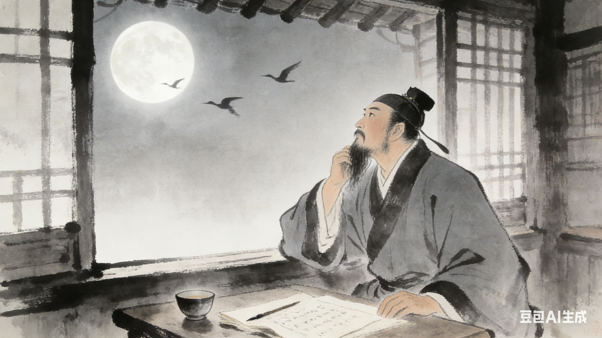

宋代
水调歌头·明月几时有
丙辰中秋，欢饮达旦，大醉，作此篇，兼怀子由。
明月几时有？把酒问青天。
不知天上宫阙，今夕是何年。
我欲乘风归去，又恐琼楼玉宇，高处不胜寒。
起舞弄清影，何似在人间。
转朱阁，低绮户，照无眠。
不应有恨，何事长向别时圆？
人有悲欢离合，月有阴晴圆缺，此事古难全。
但愿人长久，千里共婵娟。
唐代
望月怀远
海上生明月，天涯共此时。
情人怨遥夜，竟夕起相思。
灭烛怜光满，披衣觉露滋。
不堪盈手赠，还寝梦佳期。

唐代
十五夜望月寄杜郎中
中庭地白树栖鸦，冷露无声湿桂花。
今夜月明人尽望，不知秋思落谁家。

唐代
八月十五夜月二首·其一
满月飞明镜，归心折大刀。
转蓬行地远，攀桂仰天高。
水路疑霜雪，林栖见羽毛。
此时瞻白兔，直欲数秋毫。

宋代
念奴娇·过洞庭
洞庭青草，近中秋，更无一点风色。
玉鉴琼田三万顷，着我扁舟一叶。
素月分辉，明河共影，表里俱澄澈。
悠然心会，妙处难与君说。
应念岭海经年，孤光自照，肝肺皆冰雪。
短发萧骚襟袖冷，稳泛沧浪空阔。
尽挹西江，细斟北斗，万象为宾客。
扣舷独啸，不知今夕何夕！

清代
花月
花围曲槛月当天，惜月怜花夜未眠。
月下看花花更艳，花前赏月月增妍。
好乘月色评花谱，疑有花香上月弦。
愿得月圆花不谢，和花和月度流年。